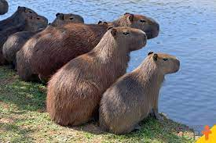
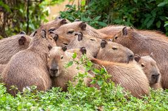

Capibara
As capivaras e suas qualidades

As capivaras são animais fofos e dentuços que geralmente tem carinha de paisagem, mas apesar disso elas são muito inteligentes. Elas são consideradas os maiores roedores do mundo. 